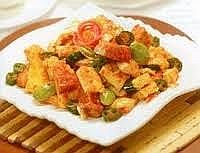

Sambel goreng TaPeDaNg (Tahu, Pete, Daging, kentaNg)

Bahan-bahan :
- 5 bh tahu (potong dadu)
- 1 papan Pete
- 200 gr daging sapi (potong dadu kecil)
- 2 bh kentang (potong dadu kecil)
- 5 bh cabe merah
- 4 bh bawang merah
- 3 siung bawang putih
- 2 bh kemiri
- 1 bh laos
- 2 bh daun salam
- 500 ml santan
- 1 sdt garam
- minyak goreng
- gula dan penyedap secukupnya
Cara Membuat :
- Goreng tahu yang telah dipotong setengah matang. tiriskan
- Giling halus cabe merah, bawang merah, bawang putih, kemiri. kemudian di tumis bersama pete, daun salam, laos dan daging sapi. setelah wangi dan daging setengah matang tambahkan santan.
- Masukkan garam, gula putih dan penyedap secukupnya.
- Setelah bumbu dan santan tercampur rata, tambahkan kentang dan tahu yang telah digoreng.
- Tunggu sampai kuah mendidih dan kentang matang